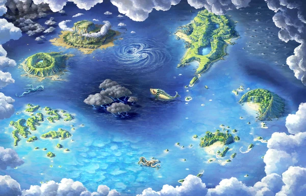

Personnages
Prologue
Le troisième Grand Order se déroule en l'an 1563, durant l'Age de l'Exploration, lorsque
les sept mers sont envahies de pirates dévoués à la recherche de la richesse et la gloire. Bravant les mers
d'Okeanos et entraîné dans l'Incinération de l'Ordre Humain, Chaldea embarque dans un voyage intrépide avec
des pirates légendaires.
Carte

Francis Drake
Aventurière, corsaire et capitaine de flotte. La femme qui a traversé le monde, et qui a
fait de l'Angletterre le souverrain de l'Âge de l'Exploration. Elle est aussi celle qui a détruit la Flotte
invincible d'Espagne et a mené à la ruine le soit disant Empire où le soleil ne se couche jamais. C'est pour
cela qu'elle est appellée la Femme qui a abattu le Soleil.